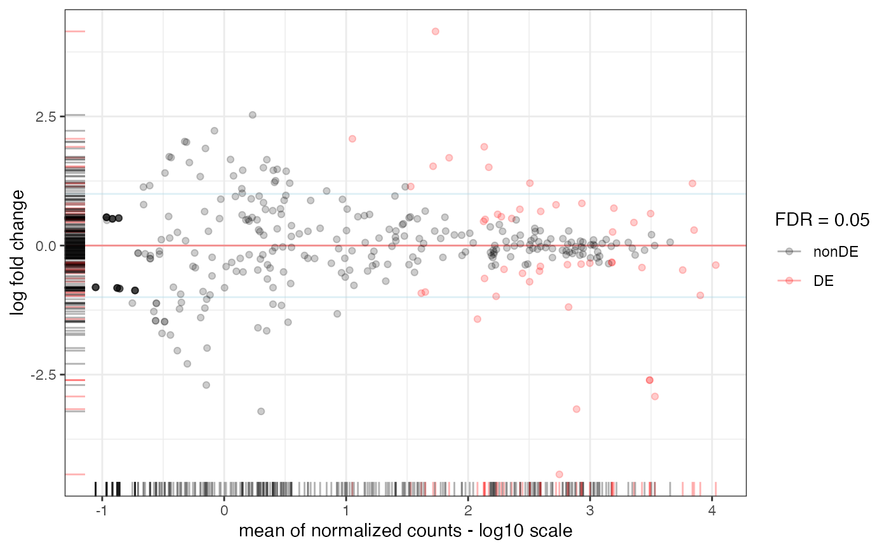
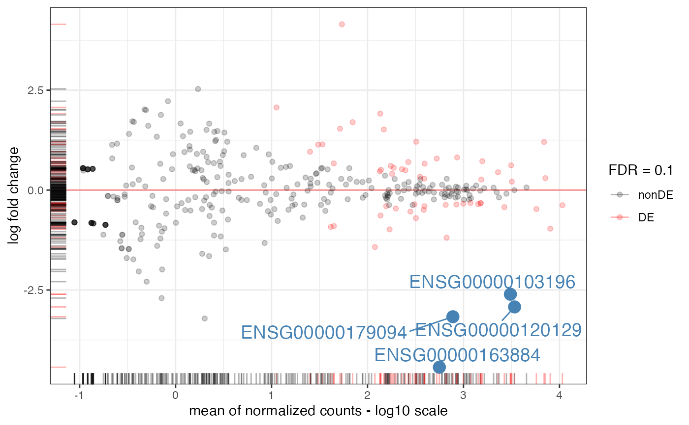

MA-plot from base means and log fold changes, in the ggplot2 framework, with additional support to annotate genes if provided.
plot_ma( res_obj, FDR = 0.05, point_alpha = 0.2, sig_color = "red", annotation_obj = NULL, hlines = NULL, title = NULL, xlab = "mean of normalized counts - log10 scale", ylim = NULL, add_rug = TRUE, intgenes = NULL, intgenes_color = "steelblue", labels_intgenes = TRUE, labels_repel = TRUE )
| res_obj | A |
|---|---|
| FDR | Numeric value, the significance level for thresholding adjusted p-values |
| point_alpha | Alpha transparency value for the points (0 = transparent, 1 = opaque) |
| sig_color | Color to use to mark differentially expressed genes. Defaults to red |
| annotation_obj | A |
| hlines | The y coordinate (in absolute value) where to draw horizontal lines, optional |
| title | A title for the plot, optional |
| xlab | X axis label, defaults to "mean of normalized counts - log10 scale" |
| ylim | Vector of two numeric values, Y axis limits to restrict the view |
| add_rug | Logical, whether to add rug plots in the margins |
| intgenes | Vector of genes of interest. Gene symbols if a |
| intgenes_color | The color to use to mark the genes on the main plot. |
| labels_intgenes | Logical, whether to add the gene identifiers/names close to the marked plots |
| labels_repel | Logical, whether to use |
An object created by ggplot
The genes of interest are to be provided as gene symbols if a symbol
column is provided in res_obj, or else b< using the identifiers specified
in the row names
#> class: RangedSummarizedExperiment #> dim: 64102 8 #> metadata(1): '' #> assays(1): counts #> rownames(64102): ENSG00000000003 ENSG00000000005 ... LRG_98 LRG_99 #> rowData names(0): #> colnames(8): SRR1039508 SRR1039509 ... SRR1039520 SRR1039521 #> colData names(9): SampleName cell ... Sample BioSampledds_airway <- DESeq2::DESeqDataSetFromMatrix(assay(airway), colData = colData(airway), design=~cell+dex) # subsetting for quicker run, ignore the next two commands if regularly using the function gene_subset <- c( "ENSG00000103196", # CRISPLD2 "ENSG00000120129", # DUSP1 "ENSG00000163884", # KLF15 "ENSG00000179094", # PER1 rownames(dds_airway)[rep(c(rep(FALSE,99), TRUE), length.out=nrow(dds_airway))]) # 1% of ids dds_airway <- dds_airway[gene_subset,] dds_airway <- DESeq2::DESeq(dds_airway)#>#>#>#>#>#>plot_ma(res_airway, FDR = 0.1, intgenes = c("ENSG00000103196", # CRISPLD2 "ENSG00000120129", # DUSP1 "ENSG00000163884", # KLF15 "ENSG00000179094") # PER1 )#> Warning: the condition has length > 1 and only the first element will be used#> Warning: the condition has length > 1 and only the first element will be used#> Warning: the condition has length > 1 and only the first element will be used